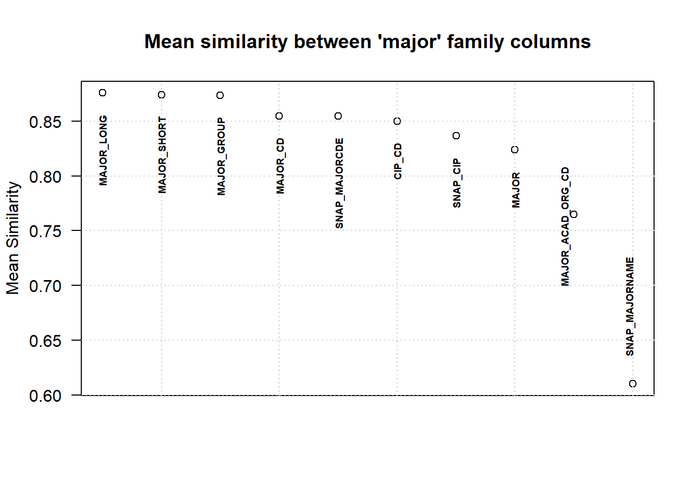
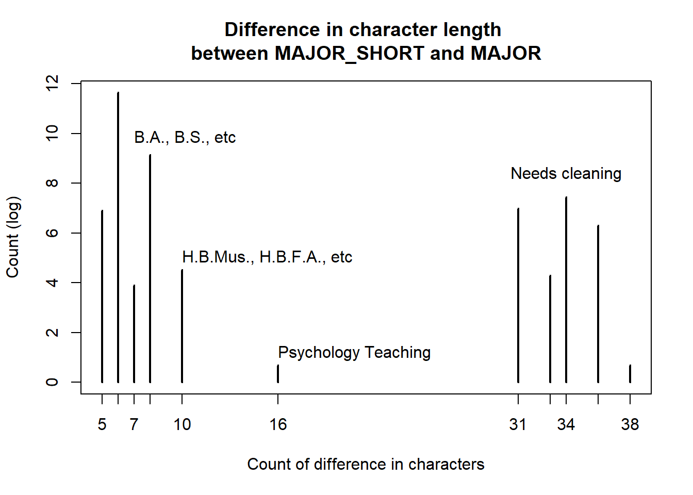

##########
## LOAD ##
##########
gradData <- readRDS(here::here("Data", "gradData_early_pull.rds"))Column Selection
PURPOSE: The purpose of this report is to examine and select columns from COMBINED_DEGREE_V table for further use and modeling. It examines columns for similarity (such as “MAJOR” and “MAJOR_CD”) and variance.
###############
## FUNCTIONS ##
###############
library(kableExtra)
detSim <- function(col1,col2) {
# This function "determines similarity" between columns to determine if the columns are redundant or in other words if they are different labels for the same thing. For example, "COLLEGE" and "COLLEGE_SHORT" should be completely redundant. However, "COLLEGE" and "ACAD_COLLEGE_CIP_CD" might not be redundant.
testTable <- table(col1,col2) |>
as.data.frame.matrix()
# Every row and every column has exactly one non-zero cell
identicalTest <-
all(apply(testTable, 1, function(x) sum(x > 0) == 1)) &&
all(apply(testTable, 2, function(x) sum(x > 0) == 1))
if(identicalTest) {return(
list(sim = "Identical", row = NA, col = NA))
}
# return row and columns that are off
offRow <- apply(testTable, 1, function(x) sum(x > 0)) |> (\(x){which(x>1)})()
offCol <- apply(testTable, 2, function(x) sum(x > 0)) |> (\(x){which(x>1)})()
# percentage difference
row_max_sum <- sum(apply(testTable, 1, max))
col_max_sum <- sum(apply(testTable, 2, max))
row_sim <- row_max_sum / sum(testTable)
col_sim <- col_max_sum / sum(testTable)
return(list(sim = min(row_sim, col_sim), row = offRow, col = offCol))
}
createCombinatorics <- function(vec) {
# This function receives a vector of column names and then produces a grid of every dual combination. It will be used to calculate the similarity
full_grid <- expand.grid(vec,vec,stringsAsFactors = FALSE)
reduced_grid <- full_grid[full_grid$Var1 < full_grid$Var2,]
return(reduced_grid)
}
family_detSim <- function(fam, data){
# where fam is a vector of column names chosen for their suspected similarity
# where data is the dataframe where the columns occur
sim_list <- fam |>
createCombinatorics() |>
(\(comb){
setNames(
lapply(1:nrow(comb),
function(y){
detSim(data[, comb[y,"Var1"]], data[,comb[y,"Var2"]])
}
),
paste(comb[,"Var1"],comb[,"Var2"])
)
})()
return(sim_list)
}
## MODIFIED CLEANING FUNCTION ##
cleanDiff <- function(majr, majr_short) {
short_intermediate <- majr_short |>
(\(x)({gsub("Psychology Teaching", "Psychology", x)}))() |>
(\(x)({gsub("Health Promotion & Education Teaching", "Health Promotion & Education", x)}))() |>
(\(x)({gsub("Consumer & Community Studies", "Consumer & Communities Studies", x)}))() |>
(\(x)({gsub("Parks, Recreation & Tourism", "Parks, Recreation, & Tourism", x)}))() |>
(\(x)({gsub("Health, Society & Policy", "Health, Society, & Policy", x)}))()
charDiff <- mapply(function(x,y) {gsub(x, "", y) }, x = short_intermediate, y = majr)
# return(short_intermediate)
return(charDiff)
}#####################
## COLUMN FAMILIES ##
#####################
# columns that sound like they are similar
div_fam <- c(
"ACAD_DIVISION_CD",
"DIVISION",
"DIVISION_SHORT",
"DIVISION_FORMAL",
"ACAD_DIVISION_CIP_CD",
"DIVISION_CD"
)
college_fam <- c(
"COLLEGE_SHORT",
"ACAD_COLLEGE_CIP_CD",
"COLLEGE_CD",
"SNAP_MAJORCOLL"
)
dept_fam <- c(
"MAJOR_ACAD_ORG_CD",
"ACAD_DEPARTMENT_CD",
"DEPARTMENT",
"DEPARTMENT_SHORT",
"DEPARTMENT_FORMAL",
"ACAD_DEPARTMENT_CIP_CD",
"DEPARTMENT_CD",
"SNAP_MAJORDEPT"
)
major_fam <- c("MAJOR_CD",
"MAJOR",
"MAJOR_SHORT",
"MAJOR_LONG",
"MAJOR_GROUP",
"CIP_CD",
"MAJOR_ACAD_ORG_CD",
"SNAP_MAJORCDE",
"SNAP_MAJORNAME",
"SNAP_CIP"
)# college_sim <- family_detSim(fam=college_fam, data = gradData)
simList <- lapply(list(
div=div_fam,
college =college_fam,
dept = dept_fam,
major = major_fam
),
family_detSim, data = gradData)Results
Columns per ‘Family’ Selected
Divisions:
The columns “ACAD_DIVISION_CD”, “DIVISION_CD”, “DIVISION”, “DIVISION_SHORT”, and “DIVISION_FORMAL” are identical. They are 98% similar to “ACAD_DIVISION_CIP_CD”.
For clarity and ease of interpretation, I will select “DIVISION_SHORT” and abandon the rest.
Colleges:
The columns “ACAD_COLLEGE_CIP_CD”, “COLLEGE_SHORT”, and “COLLEGE_CD” are identical. They are 98% similar to “SNAP_MAJORCOLL.”
For clarity and ease of interpretation, I will select “COLLEGE_SHORT” and abandon the other three.
Departments:
The columns “DEPARTMENT”, “DEPARTMENT_SHORT”, “DEPARTMENT_FORMAL”, “ACAD_DEPARTMENT_CD”, and “DEPARTMENT_CD” are identical.
These columns are 98.6% similar to ACAD_DEPARTMENT_CIP_CD
These columns are 97.6% similar to MAJOR_ACAD_ORG_CD
These columns are 87.2% similar to SNAP_MAJORDEPT.
ACAD_DEPARTMENT_CIP_CD is 96.3% similar to MAJOR_ACAD_ORG_CD and 86.4% similar to SNAP_MAJORDEPT.
MAJOR_ACAD_ORG_CD is 88.1% similar to SNAP_MAJORDEPT.
For clarity and ease of interpretation, I will select “ACAD_DEPARTMENT_CD” and abandon the rest.
Majors:
Out of the 10 columns related to major, only two are identical: MAJOR_CD and SNAP_MAJORCDE.
The remaining columns vary between 47% similarity (MAJOR_ACAD_ORG_CD and SNAP_MAJORNAME) and 99.8% (MAJOR_GROUP and MAJOR_SHORT). Each column’s mean similarity to the other columns is show in [FIGURE] below.
The column “MAJOR_SHORT” has the second highest mean similarity to the other columns, and will be selected for brevity and clarity. It differs from “MAJOR”, “MAJOR_LONG”, and “MAJOR_CD” in that these columns add details about the degree awarded. With some manipulation, these details are added as two additional columns: “award” and “honors.”
The column “MAJOR_CD” may be convenient for labels on plots.
For clarity and ease of interpretation, I will select “MAJOR_SHORT”, “MAJOR” (to extract the degree awarded), and “MAJOR_CD” (for plot labels) and abandon the rest.
## MAJOR ##
majSim <- lapply(simList[["major"]], function(x) { x[["sim"]]}) |> unlist() |> (\(x){x[order(x, decreasing = TRUE)]})()
mean_val <- lapply(major_fam, function(maj){
majSim[grepl(maj, names(majSim))] |>
as.numeric() |>
mean(na.rm=TRUE)
}
)Warning in mean(as.numeric(majSim[grepl(maj, names(majSim))]), na.rm = TRUE):
NAs introduced by coercion
Warning in mean(as.numeric(majSim[grepl(maj, names(majSim))]), na.rm = TRUE):
NAs introduced by coercion
Warning in mean(as.numeric(majSim[grepl(maj, names(majSim))]), na.rm = TRUE):
NAs introduced by coercionnames(mean_val) <- major_fam
mean_val <- mean_val |>
unlist() |>
(\(x){x[order(x, decreasing = TRUE)]})() plot(mean_val,
las = 1,
ylab = "Mean Similarity",
xaxt = "n",
xlab = "",
main = "Mean similarity between 'major' family columns"
)
grid()
text(x = 1:(length(mean_val)-2),
y = mean_val[-(length(mean_val)-1):-length(mean_val) ] - 0.02,
labels = names(mean_val)[-(length(mean_val)-1):-length(mean_val) ],
srt = 90, cex = 0.6, font = 2,
adj = c(1, 0.5))
text(x = length(mean_val)-1.1,
y = mean_val[length(mean_val)-1],
labels = names(mean_val)[length(mean_val)-1],
srt = 90,
cex = 0.6,
font = 2,
adj = c(0.60, 0))
text(x = length(mean_val),
y = mean_val[length(mean_val)]+0.025,
labels = names(mean_val)[length(mean_val)],
srt = 90,
cex = 0.6,
font = 2,
adj = c(0, 0)) 
Extraction of award, honors, and teaching designations
Comparison of MAJOR_SHORT and MAJOR, with some cleaning and manipulation, extracts the base degree awarded and whether or not an honors degree was awarded.
# Difference between MAJOR and MAJOR_SHORT
charDiff <- gsub(gradData$MAJOR_SHORT, "", gradData$MAJOR)
charDiff <- mapply(function(x,y) {gsub(x, "", y) }, x = gradData$MAJOR_SHORT, y = gradData$MAJOR)
charLength <- sapply(charDiff, nchar)
charLength |>
table() |>
log() |>
plot(ylab = "Count (log)",
xlab = "Count of difference in characters",
main = "Difference in character length \nbetween MAJOR_SHORT and MAJOR"
)
eightY <- table(charLength) |> (\(x){x[names(x) == "8"]})() |> log()
text(x = 7,
y = eightY+0.5,
label = "B.A., B.S., etc",
# pos= 3,
adj = c(0,0)
)
tenY <- table(charLength) |> (\(x){x[names(x) == "10"]})() |> log()
text(x = 10,
y = tenY + 0.3,
label = "H.B.Mus., H.B.F.A., etc",
# pos= 3,
adj = c(0,0)
)
sixteenY <- table(charLength) |> (\(x){x[names(x) == "16"]})() |> log()
text(x = 16,
y = sixteenY + 0.3,
label = "Psychology Teaching",
# pos= 3,
adj = c(0,0)
)
thirtyFourY <- table(charLength) |> (\(x){x[names(x) == "34"]})() |> log()
text(x = 34,
y = thirtyFourY + 1,
label = "Needs cleaning",
# pos= 3,
adj = c(0.5,0.5)
)
diff_exceptions_filter <- charLength > 20
# table(gradData[diff_exceptions_filter, c("MAJOR_SHORT", "MAJOR")]) |> as.data.frame.matrix() |> View()
cbind(unique(gradData$MAJOR_SHORT[diff_exceptions_filter]),
c("Consumer & Communities Studies",
"Parks, Recreation, & Tourism",
"Health, Society, & Policy",
"Health Promotion & Education"
)
) |>
kableExtra::kbl(caption = "Mis-matched majors") | Consumer & Community Studies | Consumer & Communities Studies |
| Parks, Recreation & Tourism | Parks, Recreation, & Tourism |
| Health, Society & Policy | Health, Society, & Policy |
| Health Promotion & Education Teaching | Health Promotion & Education |
# Extract Award
awards <- cleanDiff(majr = gradData$MAJOR, majr_short = gradData$MAJOR_SHORT) |>
(\(x){
gsub("[^[:alnum:]]", "", x)
})()
honors <- ifelse(awards %in% c(
"HBA",
"HBS",
"HBFA",
"HBU",
"HBMus",
"HBSW"
),
"honors",
"regular"
)
base_awards <- gsub("H", "", awards) |>
(\(x){
gsub("^BU$","BUS",x)
})()
# let's put these back on
gradData$award <- base_awards
gradData$honors <- honors
table(gradData[,c("award","honors")]) |>
kableExtra::kbl(caption = "Basic and Honors degrees")| honors | regular | |
|---|---|---|
| BA | 778 | 23390 |
| BFA | 53 | 3505 |
| BMus | 27 | 1024 |
| BS | 2087 | 94433 |
| BST | 0 | 31 |
| BSW | 12 | 1759 |
| BUS | 26 | 269 |
Another variation in awards is the “Teaching” designation. It was awarded 1,322 times (1.04%).
## TEACHING AWARDS ##
gradData$teach <- grepl("teach", tolower(gradData$MAJOR_LONG))
# unique(gradData$MAJOR_LONG[gradData$teach])
table(gradData[,c("award","teach")]) |>
kbl(caption = "Teaching awards", col.names = c("", "Non-Teaching","Teaching"))| Non-Teaching | Teaching | |
|---|---|---|
| BA | 23474 | 694 |
| BFA | 3359 | 199 |
| BMus | 1051 | 0 |
| BS | 96122 | 398 |
| BST | 0 | 31 |
| BSW | 1771 | 0 |
| BUS | 295 | 0 |
table(gradData[gradData$teach,c("MAJOR_SHORT")]) |>
(\(x){x[order(x, decreasing = TRUE)]})() |>
kbl(caption = "Teaching by major")| Var1 | Freq |
|---|---|
| English Teaching | 254 |
| History Teaching | 235 |
| Art Teaching | 162 |
| Mathematics Teaching | 157 |
| Spanish Teaching | 146 |
| Exercise & Sport Science Teaching | 85 |
| Social Science Composite Teaching | 83 |
| Theatre Teaching | 34 |
| Health Promotion & Education Teaching | 31 |
| Biology Teaching | 27 |
| Earth Science Composite Teaching | 23 |
| Physics Teaching | 22 |
| Kinesiology Teaching | 17 |
| French Teaching | 12 |
| Geography Teaching | 11 |
| Russian Teaching | 4 |
| Chemistry Teaching | 3 |
| Dance Teaching | 3 |
| Communications Composite Teaching | 2 |
| German Teaching | 2 |
| Psychology Teaching | 2 |
| Sociology Teaching | 2 |
| Anthropology Teaching | 1 |
| Communication Teaching | 1 |
| Economics Teaching | 1 |
| Geology Teaching | 1 |
| Political Science Teaching | 1 |
Low Variance Columns Discarded
## COLUMN VARIANCE ##
library(skimr)
sapply(gradData, class) |> unlist() |> table()
character logical numeric POSIXct POSIXt
47 1 12 3 3 # character logical numeric POSIXct POSIXt
# 47 1 12 3 3
charSkim <- skim(gradData[, sapply(gradData, is.character)])
# zero-variance character columns
# No need to query these
zv_col <- charSkim[charSkim$skim_type %in% c("character") & charSkim$character.n_unique == 1,
] |>
(\(x){x[,"skim_variable"][[1]]})()
# > zv_col
# [1] "DEGREECAREER"
# [2] "ACAD_DEPARTMENT_REG_SUPP"
# [3] "ACAD_DIVISION_REG_SUPP"
# [4] "IPEDLEVEL"
# low variance character columns
# defined as >80% mono-value
value_proportions <- gradData[,sapply(gradData, is.character)] |> #select character columns
(\(x){x[,-which(colnames(x) %in% zv_col )]})() |> # remove zero variance columns
(\(x){lapply(x,table)})() |> # table per character
(\(x){lapply(x, function(x){as.data.frame(x, stringsAsFactors = FALSE)})})() |> # convert to data frame
(\(x){lapply(x, function(x){x[order(x[,"Freq"],decreasing = TRUE),]})})() |> # descending order
(\(x){lapply(x, function(x){ data.frame(Var1 = x[,"Var1"], prop = proportions(x[,"Freq"])) })})() # proportions
lv_col <- value_proportions |>
(\(x){lapply(x, function(x){max(x[,"prop"])})})() |>
(\(x){lapply(x, function(x){x>0.8} )})() |>
unlist() |>
(\(x){x[x]})() |>
names()
value_proportions[lv_col]$ACAD_DEPARTMENT_TYPE
Var1 prop
1 Academic Department 0.93787777
2 Academic Program 0.06212223
$ACAD_DIVISION_TYPE
Var1 prop
1 Academic Department 0.90602383
2 Academic Program 0.09397617
$VP_CD
Var1 prop
1 02002 0.8774118
2 02193 0.1225882
$MATH950
Var1 prop
1 N 0.97816121
2 Y 0.02183879
$honors
Var1 prop
1 regular 0.97658445
2 honors 0.02341555# the problem is that these aren't my final columns.
# so these "low variance" columns could be the signal I'm looking for.
# I need to find these columns in ftfData, and the course data
# These are candidates to decline to query, but I'd need to see their distribution on the incoming data. This is the "outcome" data, as in, these people graduated. A division type of "program" vs "department" could signal longer to take to graduate from, or have a higher failure rate.
# The two type columns should be pretty similar--
detSim(gradData$"ACAD_DEPARTMENT_TYPE",gradData$"ACAD_DIVISION_TYPE") # 96% similar$sim
[1] 0.9681461
$row
Academic Department
1
$col
Academic Program
2 # I'll pick "DIVISION_TYPE" as it has the higher variance.
numSkim <- skim(gradData[, sapply(gradData, is.numeric)])
# View(numSkim)
cv <- function(x) sd(x, na.rm=TRUE) / abs(mean(x, na.rm=TRUE))
num_var <- sapply(gradData[, sapply(gradData, is.numeric)], cv) |>
(\(x){x[order(x)]})() |>
round(3)
# > num_var
# MAJOR_MIN_UNITS IPEDSRATEYEAR IPEDSCOMPYEAR
# 0.011 0.027 0.027
# MINUNITSREQUIRED UOFUGPA DEGREEUOFUGPA
# 0.058 0.119 0.122
# AGE UOFUGPAUNITS ROLLUP_SORT_ORDER
# 0.212 0.337 0.347
# NBRTERMSATTENDED ALT_ID FA_PELL
# 0.412 0.658 2.074
dateSkim <- skim(gradData[,
sapply(gradData, inherits, "POSIXt") | sapply(gradData, inherits, "POSIXct") ])
all(gradData$DEGREEDATE == gradData$DEGREEDATE1)[1] TRUE# looks like I duplicated DEGREEDATE a column in my query -- I'll double-check and clean that out.
#> length(colnames(gradData))
#[1] 63
#> length(unique(colnames(gradData)))
#[1] 62
other_col <- c(
"IPEDLEVEL",
"TRANSFERFROMINSTATE",
"IPEDSCOMPYEAR",
"IPEDSRATEYEAR",
"ALT_ID"
)Zero-variance categorical columns are identified as DEGREECAREER, ACAD_DEPARTMENT_REG_SUPP, ACAD_DIVISION_REG_SUPP, IPEDLEVEL. These have a single value and will not be queried.
Low-variance categorical columns are identified as ACAD_DEPARTMENT_TYPE, ACAD_DIVISION_TYPE, VP_CD, MATH950, honors. Of these, “ACAD_DEPARTMENT_TYPE” and “ACAD_DIVISION_TYPE” are 96.8% similar, and I will prefer “ACAD_DIVISION_TYPE” over “ACAD_DEPARTMENT_TYPE” as it has higher variation.
Low-variance numerical columns include MAJOR_MIN_UNITS and MINUNITSREQUIRED, both overwhelmingly at 122 units. These both have a cross variance less than 0.1, and will not be selected.
Other Discarded Columns
These columns are also discarded:
ALT_ID as it is an identifier and not descriptive ROLLUP_SORT_ORDER as it appears to be related to data management and is not descriptive
Results Detail
Reference
Definitions are found in this definitions document.
Division
## DIVISION ##
lapply(simList[["div"]], function(x) { x[["sim"]]}) |> unlist() |> (\(x){
idents <- x[x=="Identical"]
numerics <- x[x!="Identical"] |>
as.numeric() |>
round(3)
names(numerics) <- names(x[x!="Identical"])
numerics <- numerics[order(numerics, decreasing = TRUE)]
c(
idents,
numerics
)
})() ACAD_DIVISION_CD DIVISION ACAD_DIVISION_CD DIVISION_SHORT
"Identical" "Identical"
DIVISION DIVISION_SHORT DIVISION_FORMAL DIVISION_SHORT
"Identical" "Identical"
DIVISION_CD DIVISION_SHORT ACAD_DIVISION_CD DIVISION_FORMAL
"Identical" "Identical"
DIVISION DIVISION_FORMAL DIVISION_CD DIVISION_FORMAL
"Identical" "Identical"
ACAD_DIVISION_CD DIVISION_CD DIVISION DIVISION_CD
"Identical" "Identical"
ACAD_DIVISION_CIP_CD DIVISION ACAD_DIVISION_CIP_CD DIVISION_SHORT
"0.986" "0.986"
ACAD_DIVISION_CIP_CD DIVISION_FORMAL ACAD_DIVISION_CD ACAD_DIVISION_CIP_CD
"0.986" "0.986"
ACAD_DIVISION_CIP_CD DIVISION_CD
"0.986" College
## COLLEGE ##
lapply(simList[["college"]], function(x) { x[["sim"]]}) |> unlist() |> (\(x){
idents <- x[x=="Identical"]
numerics <- x[x!="Identical"] |>
as.numeric() |>
round(3)
names(numerics) <- names(x[x!="Identical"])
numerics <- numerics[order(numerics, decreasing = TRUE)]
c(
idents,
numerics
)
})() ACAD_COLLEGE_CIP_CD COLLEGE_SHORT COLLEGE_CD COLLEGE_SHORT
"Identical" "Identical"
ACAD_COLLEGE_CIP_CD COLLEGE_CD COLLEGE_SHORT SNAP_MAJORCOLL
"Identical" "0.984"
ACAD_COLLEGE_CIP_CD SNAP_MAJORCOLL COLLEGE_CD SNAP_MAJORCOLL
"0.984" "0.984" Department
## DEPT ##
lapply(simList[["dept"]], function(x) { x[["sim"]]}) |> unlist() |> (\(x){
idents <- x[x=="Identical"]
numerics <- x[x!="Identical"] |>
as.numeric() |>
round(3)
names(numerics) <- names(x[x!="Identical"])
numerics <- numerics[order(numerics, decreasing = TRUE)]
c(
idents,
numerics
)
})() ACAD_DEPARTMENT_CD DEPARTMENT
"Identical"
ACAD_DEPARTMENT_CD DEPARTMENT_SHORT
"Identical"
DEPARTMENT DEPARTMENT_SHORT
"Identical"
DEPARTMENT_FORMAL DEPARTMENT_SHORT
"Identical"
DEPARTMENT_CD DEPARTMENT_SHORT
"Identical"
ACAD_DEPARTMENT_CD DEPARTMENT_FORMAL
"Identical"
DEPARTMENT DEPARTMENT_FORMAL
"Identical"
DEPARTMENT_CD DEPARTMENT_FORMAL
"Identical"
ACAD_DEPARTMENT_CD DEPARTMENT_CD
"Identical"
DEPARTMENT DEPARTMENT_CD
"Identical"
ACAD_DEPARTMENT_CIP_CD DEPARTMENT
"0.986"
ACAD_DEPARTMENT_CIP_CD DEPARTMENT_SHORT
"0.986"
ACAD_DEPARTMENT_CIP_CD DEPARTMENT_FORMAL
"0.986"
ACAD_DEPARTMENT_CD ACAD_DEPARTMENT_CIP_CD
"0.986"
ACAD_DEPARTMENT_CIP_CD DEPARTMENT_CD
"0.986"
ACAD_DEPARTMENT_CD MAJOR_ACAD_ORG_CD
"0.977"
DEPARTMENT MAJOR_ACAD_ORG_CD
"0.977"
DEPARTMENT_SHORT MAJOR_ACAD_ORG_CD
"0.977"
DEPARTMENT_FORMAL MAJOR_ACAD_ORG_CD
"0.977"
DEPARTMENT_CD MAJOR_ACAD_ORG_CD
"0.977"
ACAD_DEPARTMENT_CIP_CD MAJOR_ACAD_ORG_CD
"0.963"
MAJOR_ACAD_ORG_CD SNAP_MAJORDEPT
"0.882"
ACAD_DEPARTMENT_CD SNAP_MAJORDEPT
"0.872"
DEPARTMENT SNAP_MAJORDEPT
"0.872"
DEPARTMENT_SHORT SNAP_MAJORDEPT
"0.872"
DEPARTMENT_FORMAL SNAP_MAJORDEPT
"0.872"
DEPARTMENT_CD SNAP_MAJORDEPT
"0.872"
ACAD_DEPARTMENT_CIP_CD SNAP_MAJORDEPT
"0.864" Major
lapply(simList[["major"]], function(x) { x[["sim"]]}) |> unlist() |> (\(x){
idents <- x[x=="Identical"]
numerics <- x[x!="Identical"] |>
as.numeric() |>
round(3)
names(numerics) <- names(x[x!="Identical"])
numerics <- numerics[order(numerics, decreasing = TRUE)]
c(
idents,
numerics
)
})() MAJOR_CD SNAP_MAJORCDE MAJOR_GROUP MAJOR_SHORT
"Identical" "0.999"
MAJOR MAJOR_CD MAJOR SNAP_MAJORCDE
"0.997" "0.997"
MAJOR MAJOR_LONG MAJOR_CD MAJOR_LONG
"0.977" "0.975"
MAJOR_LONG SNAP_MAJORCDE CIP_CD MAJOR_SHORT
"0.975" "0.958"
CIP_CD MAJOR_GROUP MAJOR_SHORT SNAP_CIP
"0.958" "0.929"
MAJOR_GROUP SNAP_CIP CIP_CD SNAP_CIP
"0.928" "0.92"
MAJOR_LONG MAJOR_SHORT MAJOR_GROUP MAJOR_LONG
"0.903" "0.902"
MAJOR MAJOR_SHORT MAJOR MAJOR_GROUP
"0.884" "0.883"
MAJOR_CD MAJOR_SHORT MAJOR_SHORT SNAP_MAJORCDE
"0.881" "0.881"
MAJOR_CD MAJOR_GROUP MAJOR_GROUP SNAP_MAJORCDE
"0.88" "0.88"
CIP_CD MAJOR_ACAD_ORG_CD CIP_CD MAJOR_LONG
"0.867" "0.864"
MAJOR_LONG SNAP_CIP MAJOR_ACAD_ORG_CD MAJOR_GROUP
"0.852" "0.85"
MAJOR_ACAD_ORG_CD MAJOR_SHORT CIP_CD MAJOR
"0.848" "0.845"
CIP_CD MAJOR_CD CIP_CD SNAP_MAJORCDE
"0.842" "0.842"
MAJOR SNAP_CIP SNAP_CIP SNAP_MAJORCDE
"0.833" "0.83"
MAJOR_CD SNAP_CIP MAJOR_ACAD_ORG_CD SNAP_CIP
"0.83" "0.821"
MAJOR_ACAD_ORG_CD MAJOR_LONG MAJOR MAJOR_ACAD_ORG_CD
"0.77" "0.752"
MAJOR_ACAD_ORG_CD MAJOR_CD MAJOR_ACAD_ORG_CD SNAP_MAJORCDE
"0.75" "0.75"
MAJOR_CD SNAP_MAJORNAME SNAP_MAJORCDE SNAP_MAJORNAME
"0.681" "0.681"
MAJOR SNAP_MAJORNAME MAJOR_LONG SNAP_MAJORNAME
"0.679" "0.663"
MAJOR_SHORT SNAP_MAJORNAME SNAP_CIP SNAP_MAJORNAME
"0.585" "0.585"
MAJOR_GROUP SNAP_MAJORNAME CIP_CD SNAP_MAJORNAME
"0.584" "0.557"
MAJOR_ACAD_ORG_CD SNAP_MAJORNAME
"0.476"